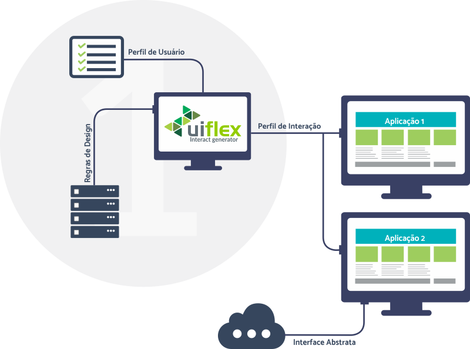

Sobre
A extensão UIFlex consiste em uma ferramenta web que permite ao usuário definir um Perfil de Interação para ser utilizado para flexibilizar diferentes aplicações web, considerando seu Perfil de Usuário, suas preferências e conhecimentos respaldados de design, denominadas Regras de Design. Tais conhecimentos são dados obtidos de autoridades consolidadas no desenvolvimento web, como por exemplo W3C.
Como pode ser visto na imagem abaixo, a ferramenta está dividida em duas etapas: i) preenchimento do Perfil do Usuário e criação do Perfil de Interação considerando as Regras de Design e ii) flexibilização das aplicações web utilizando o Perfil de Interação criado na etapa anterior.

Na primeira etapa o usuário deverá preencher seu Perfil de Usuário, contendo seus dados pessoais, características, preferências, etc. Esse procedimento será feito utilizando a ferramenta “Who Am I?”. Após o preenchimento do Perfil de Usuário, a extensão UIFlex fará uma requisição ao servidor do LIFeS (Laboratório de Interação Flexível e Sustentável), onde estão armazenadas as Regras de Design consolidadas no desenvolvimento web.
Após a realização da requisição ao servidor do LIFeS, a extensão UIFlex associará as regras de design com os dados preenchidos pelo usuário na ferramenta “Who Am I?” e, em seguida, será gerado o perfil de interação. Posteriormente o usuário deverá analisar as adaptações propostas pela UIFlex e poderá alterá-las caso julgue necessário. Após a confirmação, o Perfil de Interação poderá ser salvo para ser utilizado por sistemas desenvolvidos para utiliza-lo ou o usuário poderá injetar esse perfil a sites que não foram desenvolvidos para utilizá-lo, porém, não é garantido que todas as componentes funcionem da forma correta.
Para aumentar a privacidade dos dados de perfil dos usuários, a extensão UIFlex manterá os mesmos armazenados no dispositivo do usuário. Assim, as únicas informações que trafegarão na rede de internet será as Regras de Design.
Para mais informações acesse a página da ferramenta: lifes.dc.ufscar.br/uiflex.